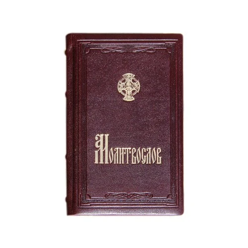
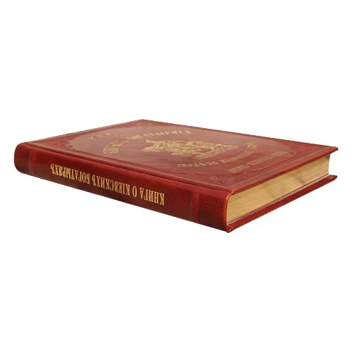
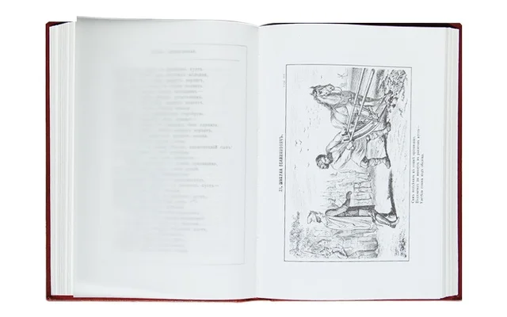
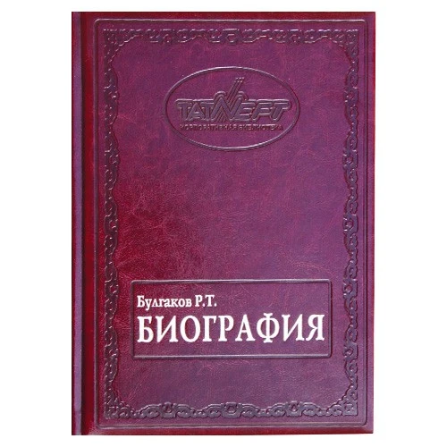
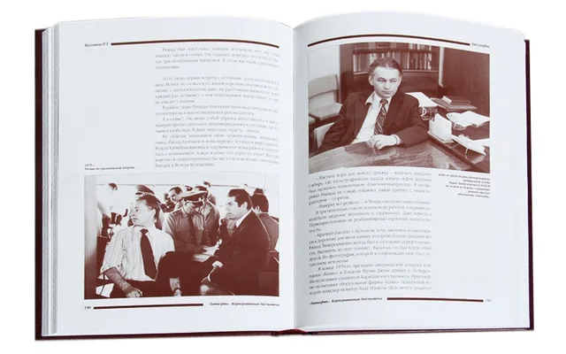
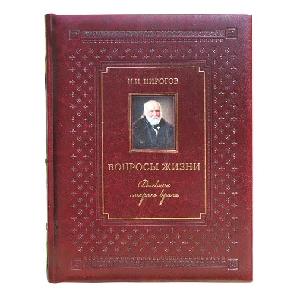
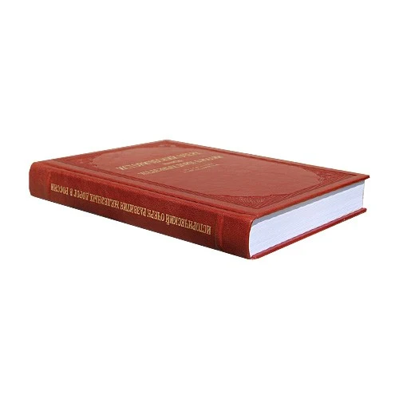
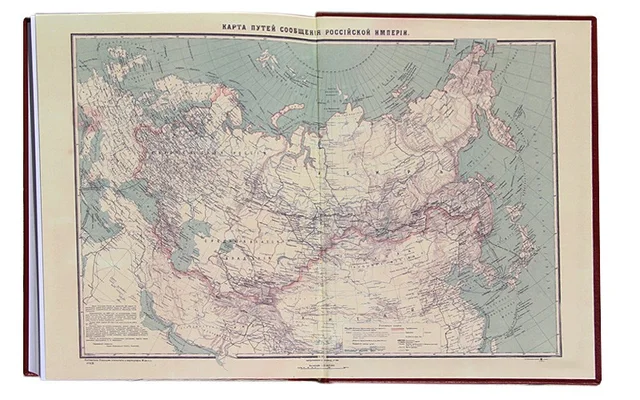

Французский переплёт

Печать и изготовление книг с французским переплетом
Типография офсетной печати «ПК КЕМ», предлагая клиентам изготовление книг, позволяет выбрать не только стандартные твердые переплеты, но и французский, голландский (чаще его называют интегральным), швейцарский… За много лет работы мы научились делать любые книги во всех возможных вариантах и можем без преувеличения сказать, что достигли вершин полиграфического мастерства в книгопечатании.
Н.И. Пирогов. Вопросы жизни. Дневник старого врача
- Формат изделия: 205х260 мм
- Бумага: Тонированная
- Кол-во страниц: 192
- Корешок: Скругленный
- Обложка: Переплетный материал на полиуретановой основе (Италии)
- Переплет: Французский (корешок с бинтами)
- Скрепление: Ниткошвейное + клей
- Тиснение: блинтовое + золотая фольга
Молитвослов
- Формат изделия: 105х155 мм
- Красочность: 4+4
- Кол-во страниц: 768
- Печать блока: 4+4
Книга о киевских богатырях
- Формат изделия: 170х237 мм
- Красочность: 1+1
- Кол-во страниц: 324
- Обложка: Натуральная кожа
- Переплет: Французский (корешок с бинтами, выпуклые поперечные элементы)
- Печать блока: 1+1
- Золочение обреза, 3 ляссе
Исторический очерк развития железных дорог в России
- Формат изделия: 185х247 мм
- Кол-во страниц: 370
Материалы и образцы
 Детские книги
Детские книги 

Кожаный переплёт Кожаный переплёт
Кожаный переплёт  Кожаный переплёт
Кожаный переплёт  Кожаный переплёт
Кожаный переплёт 

Кожаный переплёт

Кожаный переплёт Кожаный переплёт
Кожаный переплёт 


Французский переплёт


Французский переплёт

Французский переплёт Французский переплёт
Французский переплёт  Французский переплёт
Французский переплёт 

Французский переплёт

Французский переплёт